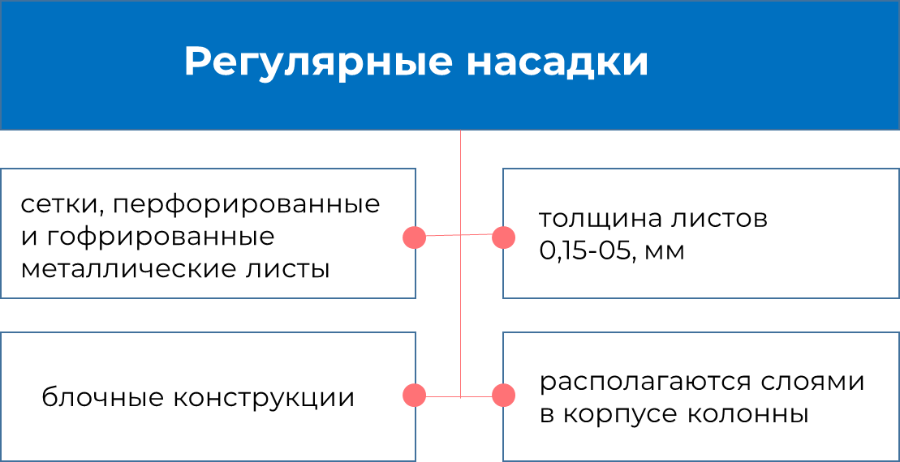

Регулярная насадка
Регулярные насадки представляют собой упорядоченные структурные элементы, разделяющиеся на две группы.
Рисунок 2. Режим движения жидкости и пара
Изготовление регулярных насадок
Плоскопараллельная регулярная насадка изготавливается из плоских металлических листов различной толщиной (в пределах 0,4–1,2 мм) и высотой (450–1500 мм), собранные в единый элемент с расстоянием между листами 10-20 мм. Располагаются листы относительно друг друга параллельно, вертикально или для повышения эффективности устанавливают повернутыми на угол 45-90о.
Плоскопараллельная является простейшей среди регулярных насадок в следствии своего легкого способа изготовления.
Рисунок 3. Регулярная простейшая плоскопараллельная насадка
Также данная насадка имеет недостатки:
1. Малая эффективность;
2. Для изготовления данных насадок применяется большое количество металла, что повышает стоимость насадки;
3. Плохое перераспределение жидкости между слоями насадки по объему колонны.
Также материалами для изготовления данной насадки могут служить деревянные доски, стекло или сетка.
Для увеличения эффективности плоскопараллельной насадки металлические листы выполняют с рифлением или добавляют к конструкции различные турбулизирующие элементы.
Рисунок 4. Регулярная проволочная насадка (Гудлоу)
Насадка Гудлоу (иногда называют регулярной проволочной насадкой Панченкова) представляет собой проволоку (диаметр 0,1 мм) из металла, наиболее используемыми являются медь или нержавеющая сталь. Проволока образует сетки, которые гофрируются и собираются в рулон – гофру. Гофры комплектуются в пакеты высотой 100 – 200 мм и располагают вертикально под углом 60о.
Пакеты насадки Гудлоу укладываются в колонну послойно. Парожидкостная смесь проходит сквозь щели между сетчатыми слоями, обеспечивая высокую эффективность разделения.
Наклонно-пакетная насадка, так же как и Гудлоу, выполнена из металлической сетки. Сетка несколькими слоями укладывается в прямоугольные пакеты и устанавливается вертикально либо под углом 45-60о друг к другу.
Рисунок 5. Регулярная наклонно-пакетная насадка
Рисунок 6. Регулярная насадка Зульцера
Пакетная регулярная насадка Зульцера выполнена из проволочной сетки, снабженной гофрами, или металлического листа с рифлением, образуя объемную структуру, разделенную на ячейки. Противоточное движение парожидкостной смеси движется по зигзагообразной траектории, что обеспечивает очень большую удельную поверхность контакта газа и жидкости.